Most Requested
TV & Frame Mounting
Samsung Frame TVs, fireplace mounts, full-motion swivel arms, and ceiling drop-down mounts anchored safely into drywall, brick, or metal studs.
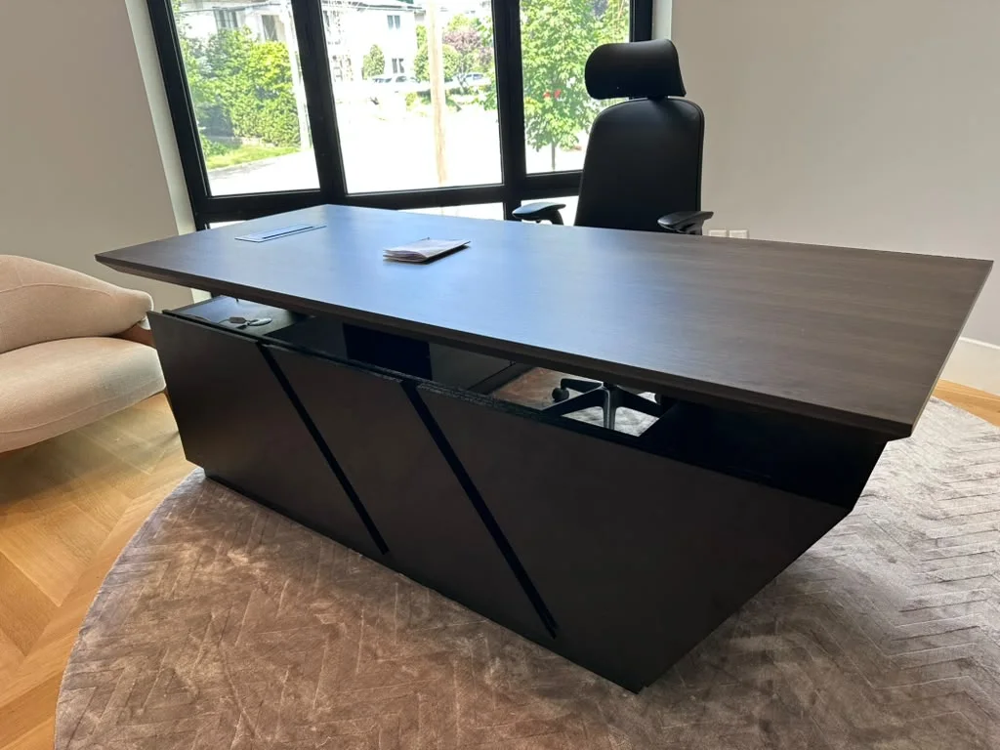
TV mounting, IKEA PAX closets, furniture assembly, drywall, painting, and smart-home installs—done level, clean, and on schedule.
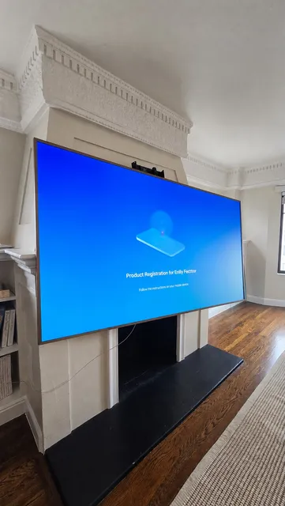
Frame TV & Fireplace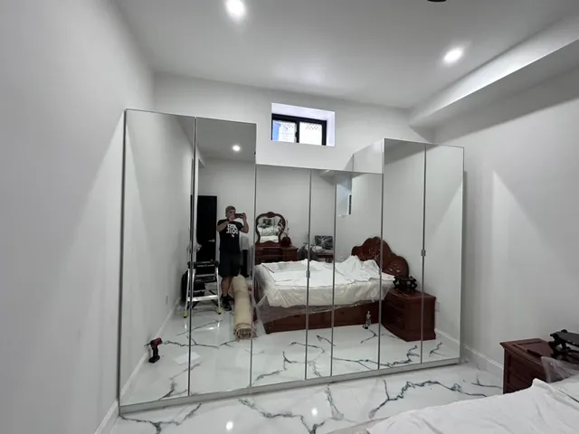
Mirrored PAX Closets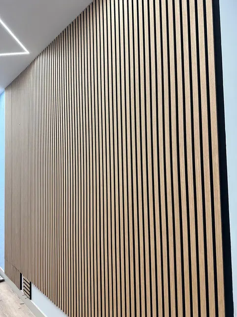
Acoustic Wood Walls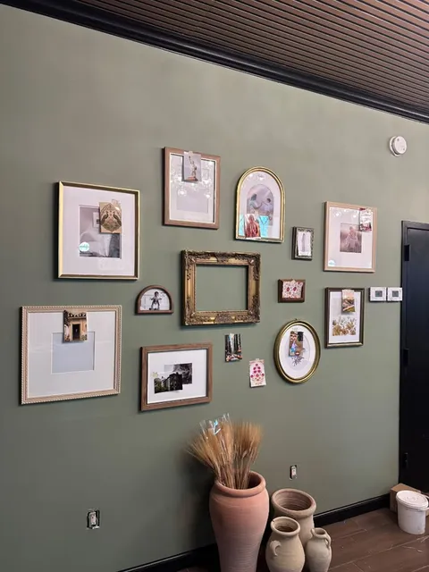
Laser-Leveled Art WallsFrom small NYC apartment repairs to custom wardrobe builds and accent walls, we arrive stocked and ready.
Samsung Frame TVs, fireplace mounts, full-motion swivel arms, and ceiling drop-down mounts anchored safely into drywall, brick, or metal studs.
Full walk-in and L-shaped wardrobe systems, IKEA PAX units, mirrored doors, mesh baskets, drawer banks, and wall-secured bookcases.
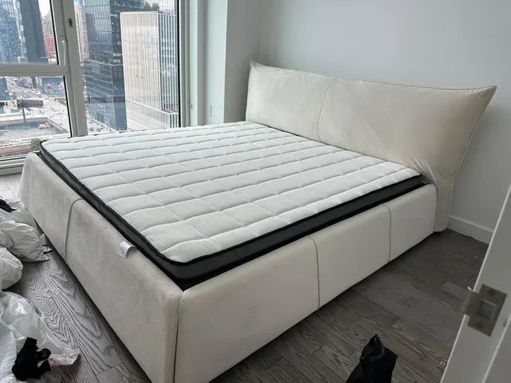
PopularUpholstered beds, executive marble and modern desks, dressers, entertainment centers, outdoor patio lounges, and storage sheds.
Acoustic wood slat accent walls, custom shelving, kitchen pass-through framing, base trim, and woodworking built square and tight.
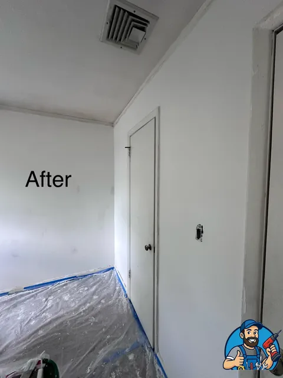
Wallpaper glue stripping, plaster skim coating, priming, and crisp interior paint lines with full drop-cloth and tape protection.
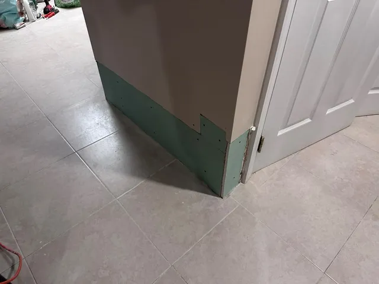
Moisture-resistant greenboard patches, hole repairs, crack restoration, taping, mudding, and seamless paint-ready wall finishing.
Laser-leveled gallery walls, heavy mirrors, gym mirror walls, bike racks, Ring floodlight cameras, and Midea U-shaped smart ACs.
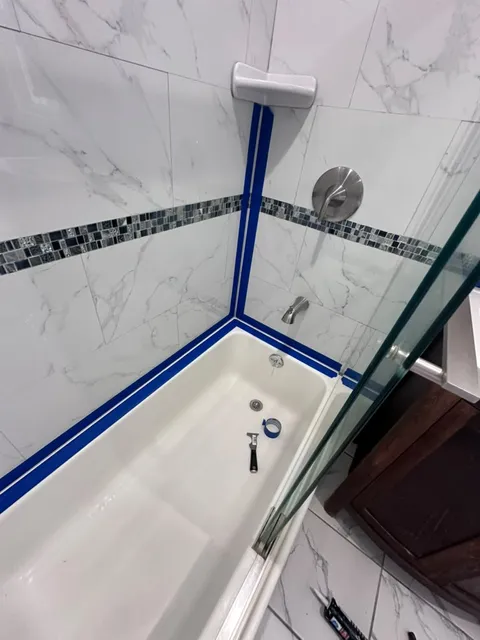
Old silicone removal, taped razor-clean seams, and waterproof mold-resistant caulking for tubs, showers, sinks, and window frames.
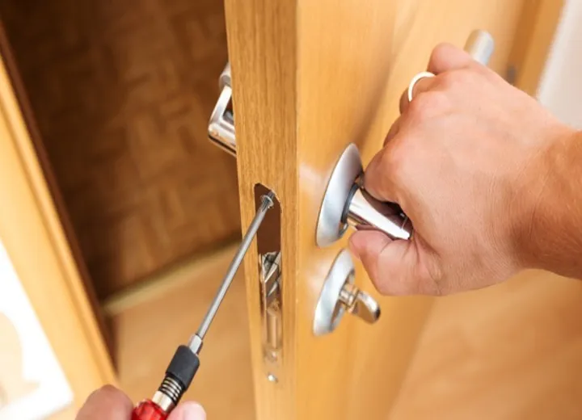
Interior door hanging, alignment fixes, squeaky hinges, locksets, smart deadbolts, handles, and weatherstripping.
Hardwood, laminate, vinyl plank, and ceramic tile installation or targeted board and grout repairs.
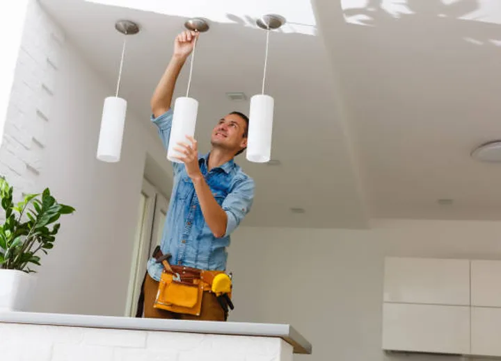
Chandeliers, pendant lights, wall sconces, ceiling fans, smart dimmers, USB outlets, and GFCI replacements.
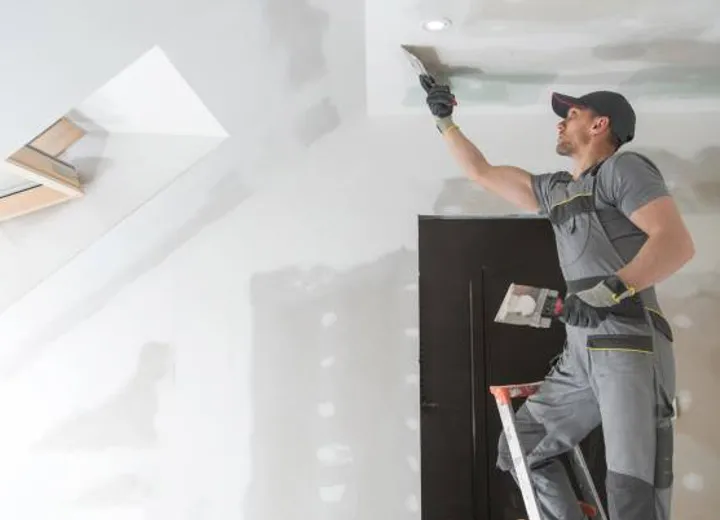
Punch-list apartment turnarounds, plumbing fixture swaps, curtain rods, blinds, and everyday household maintenance.
Same-day & weekend service available across Brooklyn, Manhattan, Queens, Staten Island & Long Island.
Unfiltered real photos from Handyman TJ projects across New York City.
Brooklyn, NY
Stripped failing wallcovering adhesive, patched switch boxes, skim-coated uneven drywall, and delivered a crisp matte finish.
Press play on any jobsite reel to watch our installations firsthand.
Filter by trade or click any completed job to view full size.
Built in Brooklyn on clean work, level lines, and zero shortcuts.
With 5 years of hands-on experience across New York City apartments, brownstones, and commercial spaces, I founded Handyman TJ to deliver dependable craftsmanship you can invite into your home with confidence.
Every appointment includes proper wall anchors for NYC plaster, brick, or metal studs, floor and furniture protection, and full cleanup before we leave. We are fully insured and background-checked.
Years Exp.
Projects Done
Satisfaction
Fast dispatch across Brooklyn, Manhattan, Queens, Staten Island, the Bronx, and Nassau County.
Gravesend, Park Slope, Williamsburg, DUMBO, Brooklyn Heights, Bay Ridge, Carroll Gardens
Home base at 1780 W 3rd St — fast dispatch across every Brooklyn neighborhood.
Upper East Side, Upper West Side, Chelsea, SoHo, Tribeca, Midtown, Financial District
High-rise apartment, co-op, and office installations with clean floor protection.
Astoria, Long Island City, Forest Hills, Bayside, Sunnyside, Rego Park
Reliable residential and commercial mounting, assembly, and repairs across Queens.
St. George, Todt Hill, New Dorp, Riverdale, Pelham Bay
Full-service handyman craftsmanship including exterior cameras, sheds, and interior renovations.
Great Neck, Garden City, Manhasset, Roslyn, Valley Stream, Long Beach
Custom closets, patio setups, gym mirror walls, and whole-home punch lists.
See what New York neighbors say about working with Handyman TJ.
"TJ was amazing! He assembled my entire bedroom set in under 2 hours. Super clean, professional, and friendly. Highly recommend!"
"I had a hole in my drywall that was driving me crazy. TJ fixed it perfectly — I can't even tell where it was. Great price too."
"Mounted 3 TVs and installed shelves. Everything is perfectly level and secure. Will definitely hire again for my next project."
"Very professional and punctual. The work quality is top-notch. It's hard to find reliable handymen in the city, but TJ is the real deal."
Book online in 60 seconds or call (718) 600-6278 — get $20 off your first service!
Get Started & Claim $20 OffSend project details for a fast quote or reserve your arrival window right on the calendar.
Tell us what needs mounting, assembling, or repairing — fast response guaranteed.
Need urgent same-day help? Call or text (718) 600-6278
Pick your preferred day and arrival window directly via Koalendar.
Ready to book your time slot?
Prefer a separate tab? Open Full Booking Calendar →
Answers on NYC wall types, booking hours, insurance, and pricing.